toki musi pi
jan Esopo
toki en sitelen li tan lipu ni:
http://www.read.gov/aesop/sitelen li tan jan Milo Winter
ante toki li tan jan Ne
akesi en mani
mani li kama tawa lupa telo lon poka pi kasi palisa tan moku telo. ona li tawa wawa lon telo la ona li anpa wawa e akesi lili lon ma telo.
akesi suli li pilin ike tan weka pi ona lili li toki e wile sona pi weka ona tawa akesi sama ona.
akesi ante li toki: “soweli ike suli li noka suli e akesi lili sama mi!”
“suli a!” akesi suli li toki. ona li kama suli e sijelo ona. “ona li suli sama ni anu seme?”
“ala. ona li suli mute!” ona li toki.
akesi li kama suli mute e sijelo ona.
“ona li ken ala suli sama ni.” ona li toki. taso akesi lili li toki e suli mute a pi soweli ike. akesi suli li kama suli mute a e sijelo ona. taso sijelo ona li pakala wawa.
o pali ala e ijo pi ken ala.
poki kalama soweli

tenpo wan la soweli lili li kama kulupu li toki pi weka tan soweli ike ona. ona li wile sona e kama soweli. ni la ona li ken tawa weka. kin a. ona o pali e ijo. tenpo suli la ona li pilin ike tan palisa luka ona. tenpo pi mute ala la ona li tawa ala tan tomo ona tan ni.
ona li toki mute. taso ala li pona tawa ona. pini la soweli pi lili mute li kama sewi li toki:
“mi pilin e ijo. ona li pona. taso mi sona ala e ken ona.
mi wile taso pana e poki kalama lon anpa lawa soweli. poki li kalama la mi sona e kama pi soweli ike mi.”
soweli lili ale li pilin wawa a. tenpo pini la ona li pilin ala e ni tan seme? taso ona li kalama pi pilin pona la soweli lili sona pi tenpo suli li kama sewi li toki:
“toki pi soweli lili ni li pona. taso mi wile sona e ni: sina seme li pana e poki lon soweli ike?”
toki en pali li ante.
soweli tomo en soweli ma

tenpo wan la soweli tomo li tawa soweli sama ona lon ma selo. moku la soweli ma li pana e palisa pan e anpa kasi e kiwen kasi lili lon poki pi telo lete. soweli tomo li moku lili. lukin la ona li moku e ona tan ni: ona li wile ala ike tawa soweli sama ona.
moku li pini la soweli pona tu li toki suli. nimi ante la soweli tomo a li toki e ale pi ma tomo. soweli ma li kute taso. ona li kama lape lon supa kasi pona lon selo kasi linja li lape pona pi kalama ala tawa kama suno. lape ona la soweli ma li soweli tomo. ijo ale pona pi ma tomo li lon sama toki pi soweli pona ona. suno kama la soweli tomo li toki tawa soweli ma. wile ona la soweli ma li tawa ma tomo lon poka ona. soweli ma li wile kin.
ona li kama lon tomo suli pi soweli tomo la ona li lukin e pini pi moku suli lon supa. pan suwi en ko suwi en ko jelo pona en moku ale pona li lon. soweli tomo li open moku e pan suwi la ona li kute e kalama wawa pi soweli ike lon lupa. pilin ike la soweli li tawa ma len li awen pi tenpo suli. pini la ona li tawa supa moku lon tenpo sin. jan pali tomo li kama li weka e moku tan supa. soweli suli li kama lon monsi ona.

soweli ma li tawa tomo lili pi soweli tomo li kama jo e poki ona e ilo len ona.
“sina jo e ijo mute pi pona mute. mi jo ala e ona.” ona li open tawa weka. “taso moku lili en lon lili pona mi li pona tawa mi tan ni: ma mi la mi ken awen pona.”
ijo lili en awen pona li pona. mute en pilin ike en sona ala li ike.
soweli loje en kili loje
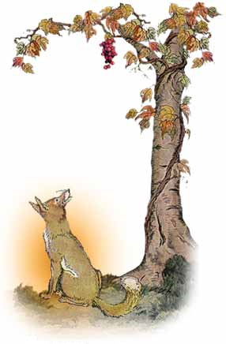tenpo suno wan la soweli loje li lukin e kulupu pona pi kili loje lon linja pi kasi suli. kili li jo ale e telo. ona li lukin e kili la uta pi soweli loje li pana e telo mute.
kulupu li lon sewi kasi. soweli li wile e ona la ona li wile tawa sewi. tenpo nanpa wan la ona li tawa sewi. taso ona li kama poka ala. ni la ona li tawa weka lili li tawa wawa sin tawa ona. taso ona li kama poka ala lon tenpo sin. tenpo mute la ona li lukin tawa ona. taso ona li ken ala.
tenpo ni la ona li kama anpa li lukin pi pilin ike e kili.
“mi nasa a.” ona li toki. “mi pali mute tawa kili nasa ike.”
ona li tawa weka pi pilin ike mute.
ijo pi weka ona li ike li lili tawa jan mute.
soweli en waso pi uta palisa
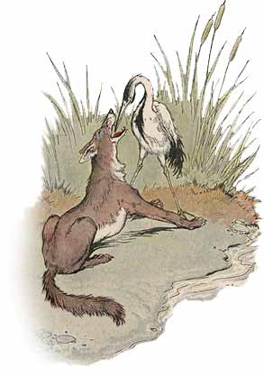soweli li moku pi wile ike. palisa kiwen sijelo li kama awen ike lon anpa uta ona. ona li ken ala tawa e ona li ken ala moku. ni li ike mute tawa soweli ni pi wile ike.
ni la ona li tawa waso pi uta palisa. pilin soweli la waso li ken weka e kiwen ike tan uta soweli kepeken uta palisa ona.
sina weka e kiwen sijelo ni la mi pana pona tawa sina.” soweli li toki.
waso li pilin ike tan uta wawa pi soweli ni. taso ona li lon e wile soweli.
kiwen li kama weka la soweli li open tawa.
“taso sina pana ala e ijo tawa mi!” waso li kalama wawa pi pilin ike.
“a!” soweli li mu ike li tawa sike. “mi pana kin tawa sina. sina pana e lawa sina lon uta mi. mi moku ala e ona.”
o wile ala e pana pi jan ike.
soweli wawa en soweli lili
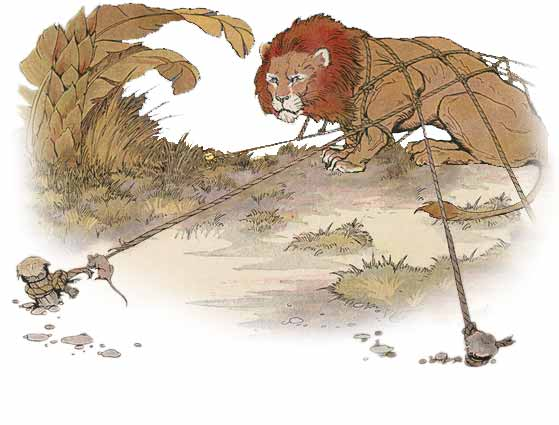soweli wawa li lape lon ma kasi. lawa ona li lon luka wawa ona. soweli lili li kama lon poka ona. pilin ike pi soweli lili la ona li tawa lon nena sinpin pi soweli wawa. soweli wawa li kama lon li luka suli pi pilin utala e soweli lili li wile moli e ona.
“o awen e mi!” soweli lili li toki wile. “o ken e tawa mi. tenpo suno wan kama la mi pana sama tawa sina.”
pilin pi soweli lili li musi tawa soweli wawa. nasin seme la soweli lili li ken pana tawa ona? taso ona li pona li weka e luka ona.
tenpo suno mute kama la soweli wawa li alasa lon ma kasi. len poki pi jan alasa li kama len e ona. ona li ken ala weka. ni la ona li mu wawa pi pilin utala. soweli lili li sona e mu ona li kama lon poka pi soweli wawa tawa lon len. ona li tawa linja len li pakala e ona kepeken uta. soweli wawa li weka tan len.
“pana mi li musi tawa sina.” soweli lili li toki. “tenpo ni la sina sona e ken pi soweli lili.”
pali pona li lili ala.
pipi lili en mani
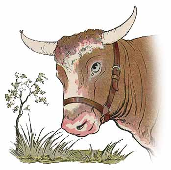pipi lili li tawa lon sewi ma li kalama suli pi ijo lili li kama lon palisa lawa pi soweli mani. lape lili ona li pini la ona li open tawa. ona li toki tawa mani suli.
“pilin mi la weka mi li pona tawa sina.” ona li toki.
“ona li suli ala tawa mi.” mani li toki. “mi sona ala e lon sina.”
tenpo mute la mi suli tawa mi li lili tawa jan poka. ijo pi lawa lili li suli mute tawa ona sama.
kasi pi kili ala
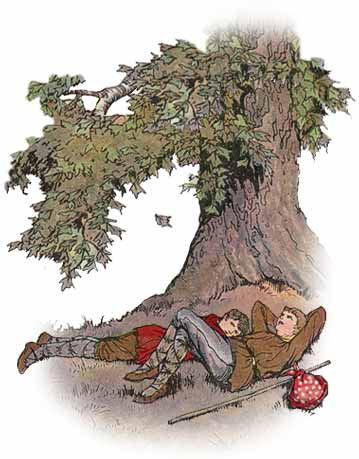jan tawa tu li tawa lon suno wawa sewi li alasa e pimeja pi kasi suli tan lape. ona li lukin e lipu pona kasi la ona li kama sona e ni: ona li kasi pi kili ala.
“a kasi pi kili ala li ike a!” jan wan li toki. “ona li pana e kili ala a li pana taso e lipu jaki ona lon anpa.
“jan ike pi pilin ike o!” kalama li kama tan kasi. “sina lape lon pimeja lete mi. taso toki sina la mi ike! sewi Jupite o, jan li pilin ike tan ijo pona!”
tenpo mute la ijo pi pona mute li suli ala tawa mi.
waso en pipi kalama
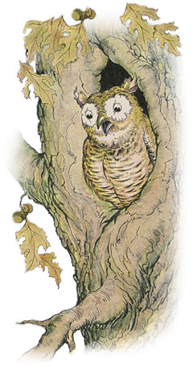waso li lape lon tenpo suno ale. suno li kama anpa la ona li pana e suno loje pi kama weka. pimeja li kama li tawa pi wawa lili lon ma kasi. ni la waso li kama tan lupa kasi li tawa e sijelo ona e lukin ona. tenpo ni la mu nasa ona li kalama lon ma pi kalama ala. ona li open alasa e pipi e akesi e soweli lili.
waso suli ni li kama suli la ona li kama pilin ike. ijo mute li kama pona ala tawa ona. ijo li pini e lape ona la ona li ike mute. tenpo suno wan pi tenpo seli la ona li kama lape lon lupa ona lon kasi suli. pipi poka li kalama. ona li kalama pi pilin pona. taso ona li ike tawa kute. lawa waso li kama tan lupa kasi.
“o weka tan ni.” ona li toki tawa pipi. “sina pona ala pona? mi suli mute li wile lape lon kalama ala.
taso toki pipi la pipi li ken awen lon ni sama waso. ni la ona li wawa e kalama ona.
sona waso la toki utala li ike. suno la lukin ona li pona ala. ni la ona li ken ala pakala e pipi. ante la ona li toki pona tawa ona:
“pipi o.” ona li toki. “mi wile awen lon la kalama ona o kama pona tawa mi. a mi jo e telo kili nasa pona pi nena Olinpo. jan sewi Apolon li moku e ona li kalama musi tawa jan sewi ante. o kama lon ni. o moku e telo pona ni lon poka mi. sona mi la ona li pona e kalama musi sina sama jan sewi Apolon a.”
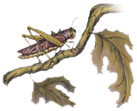nimi pona waso li pona tawa pipi nasa. ona li kama sewi tawa lupa waso. taso ona li kama poka la waso li ken lukin e ona li moku ale e ona.
toki pona pi lon ala li olin lon ala. o awen wawa. toki pona pi jan ike li ike.
kasi palisa en kasi linja
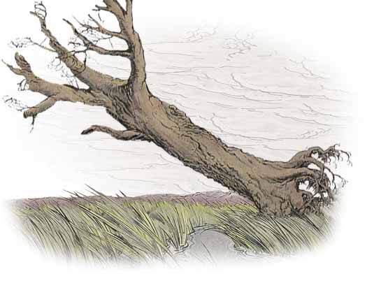kasi palisa pi suli mute li awen lon poka pi telo lili linja. kasi linja mute li lon telo. kon li tawa la kasi suli li awen palisa wawa. luka ona li awen sewi. taso kasi linja li tawa anpa lon kon tawa li kalama pi pilin ike.
“mi sona e tan pi kalama sina.” kasi suli li toki. “kon lili li tawa lili e supa telo li tawa mute e sina. taso mi kasi wawa. mi awen palisa li awen wawa lon kon ike pi wawa mute.”
“o pilin ike tan mi.” kasi lili mute li toki. “kon li ike ala tawa mi. ona li tawa e mi. taso mi pakala ala. sina pilin pona tan wawa sina. sina awen pona. taso pini li kama.”
kasi linja li toki la kon sike wawa li kama tan ma lete. kasi suli li awen wawa li utala e kon ike. kasi linja li tawa anpa. kon li kama wawa mute a. ni la kasi suli wawa li kama pakala li kama anpa. noka ona li kama weka tan ma. ona li awen lon anpa lon poka pi kasi linja.
utala li ike la o pini. ante la sina kama pakala.
waso en poki
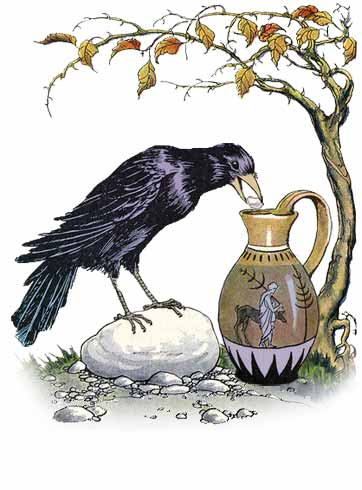tenpo pi telo ala la waso li moku lili e telo. waso pi wile moku li lukin e poki pi telo lili. taso poki li suli. telo li lon anpa. waso li ken ala uta e telo. pilin ona la ona li kama moli tan wile moku.
taso ona li pilin e ijo. ona li kama jo e kiwen lili li pana e ona li poki. kiwen li kama lon poki la telo li kama sewi li kama lon poka pi uta waso. ni la ona li ken moku.
sona li pona lon tenpo ike.
soweli utala tu
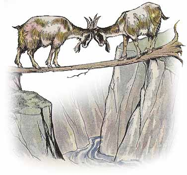soweli tu li tawa musi lon supa kiwen sewi lon poka pi nena suli. ona tu li kama poka lon poka lupa. soweli wan li lon poka wan. soweli ante li lon poka ante. anpa la telo li tawa wawa. sijelo pi kasi moli li wan e poka tu. ona li nasin lili li kama e pilin ike lon soweli wawa kin. taso soweli tu ni li pilin ike ala. ona la ona sama li suli taso. ni la ona li awen ala.
soweli wan li noka e kasi li open tawa. soweli ante li sama. insa pi sijelo kasi la ona tu li kama lawa e ona ante. soweli ala li tawa. ni la ona tu li tawa anpa. telo wawa li tawa weka e ona.
ike li kama la o utala ala.
soweli pi palisa sinpin en soweli loje
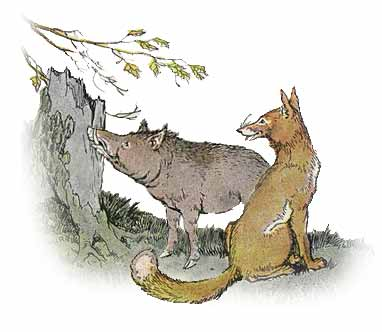soweli li wawa e palisa sina ona kepeken anpa kasi la soweli loje li kama. tenpo mute la soweli loje li wile ike musi e soweli poka ona. lukin la soweli loje li lukin pi pilin ike lon sike tan ijo ike kama. taso soweli palisa li awen pali.
“sina pali e ni tan seme?” soweli loje li toki. “lukin la ijo ike li lon ala.”
“lon.” soweli palisa li toki. “taso ijo ike li kama la mi ken ala pali. palisa utala mi o pona. ante la mi kama pakala.”
pona utala li kama e pini utala.
waso
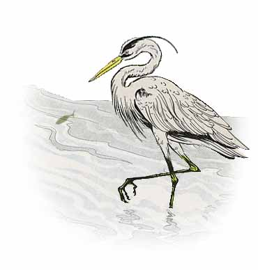waso li tawa pi wawa lili lon poka pi telo linja. ona li lukin e telo pona. linja ona pi anpa lawa en uta palisa ona li ilo pi kama moku. telo li jo mute e kala. taso ona ala li pona tawa ona.
“kala lili li ike tawa mi.” ona li toki. “ona li ike tawa waso suli sama mi.”
kala pona li kama poka.
“ike kin.” waso li toki. “mi wile ala open e uta mi tawa kala sama ni!”
suno li kama sewi la kala li weka li tawa anpa pi telo suli lete. waso li lukin e kala ala. pini la pipi lili li moku pona tawa ona.
o wile suli ala. ante la ijo ike anu ijo ala li awen tawa sina.
soweli en waso pi luka pimeja
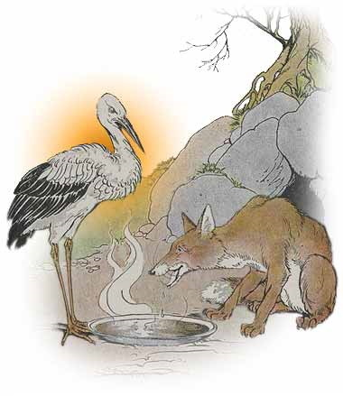tenpo suno wan la soweli loje li wile kama musi li wile ike e waso pi luka pimeja. waso li nasa lukin li musi lukin tawa soweli.
“o kama moku lon poka mi.” ona li toki tawa waso. ona li pilin pona tan musi ike ona. waso li wile kama li kama pi wile moku pona.
moku la soweli li pana e moku telo. taso ona li lon supa lili. waso li ken telo lili e uta ona li ken ala moku e ona. taso soweli li moku pona e ona. ona li wile ike tawa waso la ona li moku wawa e ona tan musi ike ona.
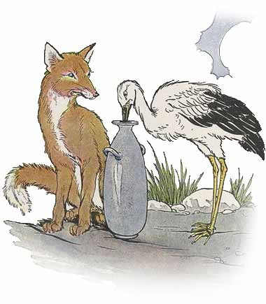
ni li ike mute tawa waso. taso ona li awen pona li utala ala. ante la ona li toki e wile ona tawa soweli. sama la ona li wile pana e moku tawa soweli. kama la soweli li tawa waso lon tenpo moku. waso li pana e kala pi kon pona. taso ona li lon poki suli. waso li ken moku pona e ona kepeken palisa uta suli ona. taso soweli li ken ala uta e ona. ona li ken pilin kon taso e ona. ni la soweli li kama pilin utala. waso li toki:
musi ike pi jan poka li ike tawa sina la o musi ike ala e ona.
soweli pi palisa lawa en sitelen ona
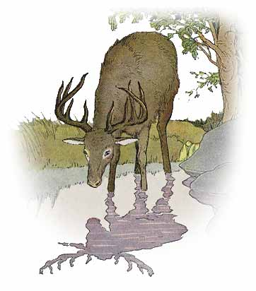soweli pi palisa lawa li moku e telo li lukin e sitelen ona lon telo. nena pi palisa luka ona li pona tawa ona. taso noka lili li ike tawa ona.
“ni li lon tan seme?” ona li toki pi pilin ike. “lawa mi li pona mute lukin tan palisa pona mi. taso noka mi li ike lukin.”
tenpo ni la ona li pilin e kon pi soweli wawa li tawa weka kepeken tenpo lili. taso ona li tawa wawa la palisa lawa ona li kama awen lon luka kasi. soweli wawa li kama lon. pilin pi soweli palisa la noka ona pi ike lukin li ilo pona. taso palisa lawa ona li kama e pakala ona.
tenpo mute la ijo pi pona lukin li pona tawa mi. ilo li ike tawa mi lon tenpo mute.
waso loje en soweli loje
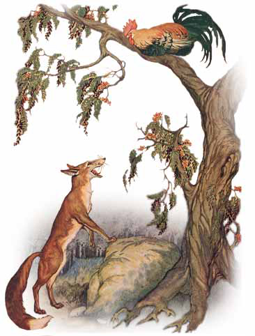tenpo suno pi pimeja kama la suno li tawa anpa. waso sona tawa sewi kasi. ona li wile kama lape li tawa wawa e luka ona li mu wawa. ona li open kama lape la ona li lukin e ijo loje e nena sinpin suli. anpa la soweli loje li lon.
“sina kute ala kute e ijo sin?” soweli loje li toki wawa pi pilin pona.
“ijo sin seme?” waso li toki pi wawa lili. taso ona li pilin nasa tan soweli loje ike.
“kulupu mama sina en kulupu mi en kulupu pi soweli ale li wile weka e ijo ante ona li wile awen pona tawa tenpo ale. ona li pona a! mi wile luka pona e sina. o kama anpa. mi o pilin pona lon poka tan pona ni.”
“a pona!” waso li toki. “mi pilin pona kin tan ijo sin ni.” taso ona li toki wawa ala li lukin e ijo weka.
“sina lukin e seme?” soweli li toki pi pilin ike lili.
“a kulupu soweli wawa li kama. ken la ona li kute e ijo sin li—”
taso soweli loje li awen ala. ona li tawa weka.
“o awen.” waso li toki wawa. “sina tawa tan seme? soweli wawa li pona tawa sina lon tenpo ni!”
“lon.” soweli loje li toki. “taso ken la ona li kute ala e ijo sin. ante la mi wile pali e ijo.”
waso li pilin pona li kama lape pona. soweli loje li sona. taso waso li sona mute. toki waso pi lon ala la ona li ken weka e soweli loje.
tenpo mute la jan pi lon ala li kute e toki pi lon ala.
soweli loje en mani
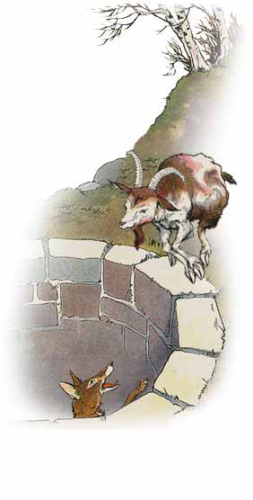soweli loje li tawa anpa pi lupa telo. ona li suli mute ala. taso ona li ken ala kama lon sewi. ona li awen lon tenpo suli la mani lili pi wile moku li kama. pilin mani la soweli li moku e telo lon anpa. ona li wile sona e pona telo.
“telo ante pi ma ale la ona li pona mute a.” soweli sona li toki. “o kama anpa. o moku e ona. mute pona li lon tawa mi tu.”
mani pi wile moku li tawa anpa wawa li kama moku e ona. wawa sama la soweli loje li kama lon sewi mani li kama weka tan lupa.
tenpo ni la mani pi sona lili li sona e pakala ona. ona li toki e wile sewi ona tawa soweli. taso soweli loje li kama tawa ma kasi.
“sona sina li mute sama linja pi anpa lawa sina la sina tawa anpa ala tan ni: sina ken ala kama sewi sin.”
o sona e pakala kama.
soweli loje en soweli wawa
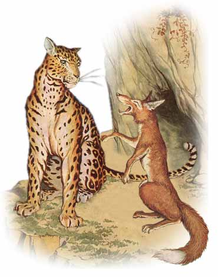moku suli li pini la soweli loje en soweli wawa li lape lili li toki musi e sijelo ona. soweli wawa li pilin pona tan selo pona ona pi sike lili mute. ona li toki ike tawa soweli loje tan sijelo ike ona.
soweli loje li pilin pona tan linja monsi ona pi pini walo. taso sona ona la sijelo ona li pona mute ala sama soweli wawa. taso ona li awen toki musi ike kepeken sona ona. soweli wawa li kama pilin utala. taso soweli loje li kama sewi.
“sijelo sina li pona.” ona li toki. “taso pona la lawa sina o pona. ni li pona lon.”
sijelo pona li sama ala lawa pona.
akesi en soweli lili
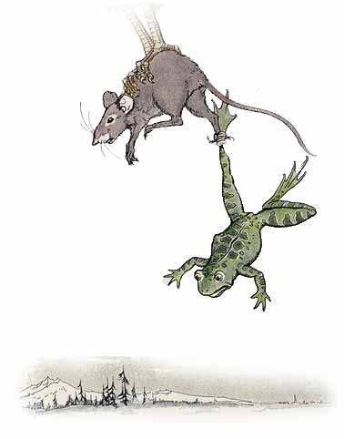soweli pi lili mute li lukin kama musi li tawa lon poka telo akesi. akesi li lukin e soweli la ona li tawa poka telo li mu:
“sina wile ala wile kama lon ma mi? mi ken pana e musi tawa sina.”
soweli lili li wile mute lukin e ma ale. taso ona li ken ala tawa pona lon telo.
akesi li pilin e ijo. ona li wan e noka ona e noka soweli kepeken linja kasi wawa. ni la ona li tawa telo. monsi ona la soweli lili pi sona lili li kama. soweli lili li wile tawa ma lon tenpo sin. taso akesi li wile ante. ona li tawa anpa telo li moli telo e soweli lili. ona li wile weka e linja kasi tan noka ona. taso waso li kama. ona li lukin e sijelo pi soweli moli li jo weka e ona. noka akesi en noka soweli li awen wan. ni la waso li jo e ona tu tawa moku ona.
jan pi wile pakala li kama pakala.
soweli ike pi selo pona
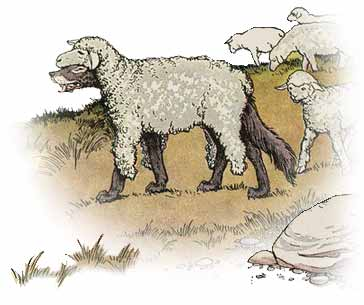soweli ike li ken ala kama moku pona tan jan pi awen soweli. taso tenpo pimeja wan la ona li lukin e selo soweli weka. tenpo suno kama la ona li kepeken len e selo li tawa ma soweli. soweli lili li tawa lon monsi ona. ona tu li tawa weka. soweli ike li moli e soweli lili.
tenpo pimeja ni la soweli ike li tawa ma soweli lon poka soweli. taso pimeja ni la jan awen li wile moku e soweli. ni la ona li jo e ilo moli li tawa ma soweli li moli e soweli ike.
jan ike li kama pakala tan ike ona.
waso wawa en pipi
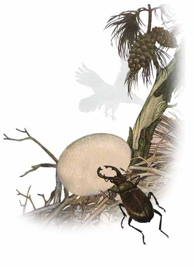tenpo wan la pipi li wile awen e soweli lili tan waso wawa tan ni: soweli lili li kama tawa pipi. taso waso wawa li kama anpa lon soweli. kon wawa pi luka waso li weka e pipi. pipi li pilin utala mute li tawa tomo waso li tawa anpa e sike waso. ona li pakala e sike ale. pilin ike waso li suli mute a. taso ona li sona ala e pali pipi.
sike suno kama la waso li pali e tomo ona lon nena suli. taso pipi li lukin e ona li pakala sin e sike. pilin ike suli la waso li toki tawa sewi Jupite. waso li pana e sike ona lon noka ona. taso pipi li tawa lawa pi sewi Jupite. ona li kama sewi li weka e pipi. taso sike li tawa anpa tan noka ona.
ni la pipi li toki tawa sewi Jupite. toki ona la ona li pali e ni tan ike waso. sewi Jupite li sona e toki ona. sewi Jupite li kama e ni: waso li pana e sike ona lon tenpo pi kama seli tan ni: pipi li lape lon tenpo ni.
jan pi wawa lili kin li ken pana sin e ike.
mama en soweli
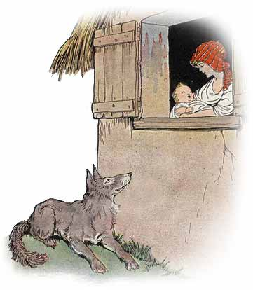tenpo pi kama suno la soweli pi wile moku li alasa lon poka tomo pi ma tomo. ona li kute e kalama pi jan sin li kute e toki mama:
“jan lili o pini! o pini e kalama sina. ante la mi pana e sina tawa soweli!”
toki ni li nasa tawa soweli. taso ona li pilin pona tan moku pona. ni la soweli li awen lon anpa pi lupa tomo li awen tan jan lili kama. jan lili li awen kalama. taso soweli li kama moku ala. tenpo pimeja la ona li kute e toki mama lon tenpo sin. mama li awen lon poka lupa li kalama musi lape tawa jan ona.
“jan lili o, pona! soweli li moku ala e sina. ala a! mama mije li lukin. soweli li kama poka la mama li moli e ona.”
ni la mama mije li kama lon poka tomo. soweli li tawa weka.
toki ale ala li lon.
soweli pi tawa wawa en akesi pi tawa lili

tenpo wan la soweli pi tawa wawa li musi ike tan akesi pi tawa lili.
“sina tawa ala tawa?” ona li toki li kalama tan musi ike.
“tawa.” akesi li toki. “sina la mi tawa lili. taso mi ken tawa pona. mi tu o utala tawa.
soweli li pilin musi tan toki ni. ona li wile utala tawa tan musi. soweli loje li pana e pona tawa ona li sitelen e nasin pi utala tawa ona li open e tawa ona.
tenpo lili la soweli pi tawa wawa li lon weka. ona li wile musi ike tan akesi. ni la ona li lape lili lon poka nasin li awen tan kama akesi.
akesi li awen tawa lili. taso ona li tawa pona. ona li kama lon poki pi soweli lape li awen tawa. soweli li awen lape li sona ala e kama akesi. ona li pini lape la akesi li lon pini nasin. soweli li tawa wawa mute. taso ona li pini lon monsi akesi.
tenpo ale ala la jan wawa li pini pona lon utala.
soweli en sitelen ona
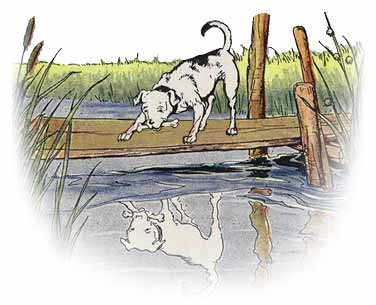jan pi esun soweli li pana e palisa sijelo tawa soweli. soweli li jo e palisa lon uta li tawa tomo ona. ona li kama lon nasin lon sewi pi telo linja li lukin anpa e telo. supa telo la ona li lukin e sitelen pi ona sama. taso lukin pi soweli nasa la sitelen ona li soweli ante pi palisa suli.
ona li awen la ona li ken sona e sama ona. taso ona li awen ala. ona li weka e palisa ona li tawa palisa pi sitelen ona lon telo. ona li kama jo ala e palisa. ona li tawa lon telo tawa poka telo. ona li kama lon ma li pilin ike tan weka pi palisa pona ona. ona li soweli nasa a.
wile suli li nasa.
soweli loje en waso kalama
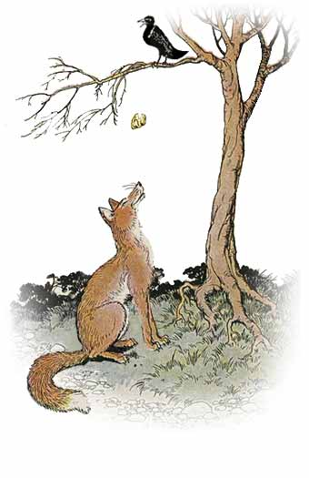tenpo suno wan pi kama suno la soweli loje li alasa lon ma kasi li lukin e waso pimeja lon luka kasi sewi. ona li lukin e waso mute. taso waso ni li jo e moku ko lon uta ona.
“a mi wile ala awen alasa.” soweli loje sona li toki lon lawa ona. “moku lili li lon tawa mi.”
ona li kama lon poka pi kasi waso li lukin sewi tawa waso. soweli li toki. “waso pi pona lukin o, suno pona a!”
waso li lukin pi pilin ike lili e soweli. ona li jo wawa e moku lon uta ona li toki ala tawa soweli.
“ona li pona lukin a!” soweli li toki. “selo ona li suno a! sijelo pona a! luka pona a! ona li kalama pona tawa mi la mi ken kama sona e pona ale ona.”
waso li kute e toki pona ni li pilin ike ala. ona li wile pona mute tawa soweli. ni la ona li open e uta ona li kalama wawa. taso moku ona li kama anpa li tawa uta open soweli.
“pona tawa sina.” soweli sona li toki pona li kama weka. “kalama sina li pona lon. taso lawa sina li pona ala.”
jan ike pi toki pona li kama jo ike e ijo pona tan jan kute.
pipi lili en waso
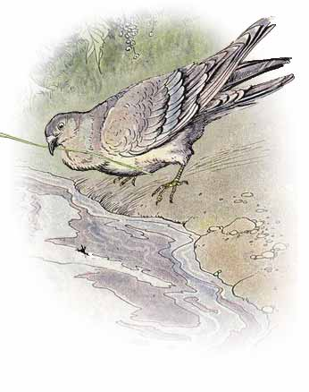waso li lukin e ni: pipi lili li tawa anpa lon telo. pipi li utala e telo li wile tawa ma. pilin ike ona la waso li pana e linja kasi lon poka pipi. pipi li jo wawa e linja li tawa poka telo.
tenpo kama la pipi li lukin e ni: jan li wile moli e waso kepeken kiwen. jan li kama pana e kiwen la pipi li uta e anpa noka jan. pilin ike la jan li pana ike e kiwen li utala ala e waso. waso li tawa weka li awen pona lon ma kasi weka.
pali pona li lili ala.
jan en jan soweli
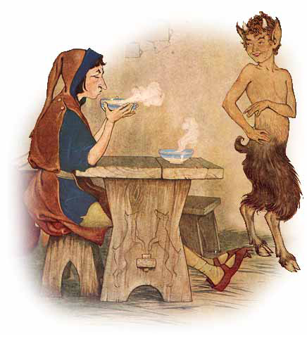tenpo pi pini mute la jan li kama sona e jan soweli pi ma kasi. ona tu li kama pona li awen lon tomo jan. taso tenpo pimeja lete wan la ona li tawa tomo. jan li pana e kon uta tawa luka ona.
“sina pali e ni tan seme?” jan soweli li toki.
“mi wile seli e luka mi.” jan li toki.
ona li kama lon tomo la jan li pali e poki tu pi telo moku. ona li pana e ona seli lon supa. pilin pona la jan pona tu li anpa lon supa li moku pona. taso jan li pana sin e kon uta tawa poki moku ona.
“sina pali e ni tan seme?” jan soweli li toki.
“mi wile lete e moku mi.” jan li toki.
wawa la jan soweli li kama sewi li tawa uta tomo.
“awen pona.” ona li toki. “mi sona pona e sina. kon jan li seli li lete la ona li ike tawa mi!”
jan li toki pi kulupu utala tu la ona li pona tawa kulupu ala.
soweli en kute ona
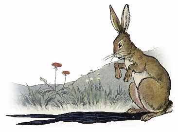soweli wawa li moku e soweli la ona li kama pakala tan palisa lawa ona. ona li pilin ike mute tan palisa lawa ike. ni la ona li toki lawa tawa soweli ante poka. ona o weka tan ma ona lon tenpo suno ni.
soweli ale li pilin ike tan toki lawa ni. soweli ale pi palisa lawa li kama tawa weka. soweli pi kute suli li jo ala e palisa lawa. taso soweli wawa li ike tawa ona. lape ona la ona li lukin e soweli wawa ike.
ona li kama tan lupa lon open pi tenpo suno la ona li lukin e selo pimeja pi kute suli ona li kama pilin ike mute.
“pipi poka mi o!” ona li toki. “mi tawa. pilin mi la kute mi li palisa lawa tawa soweli. mi ken ala ante pilin ona.”
o ken ala e ike pi jan ike.
jan pi alasa kala en kala lili
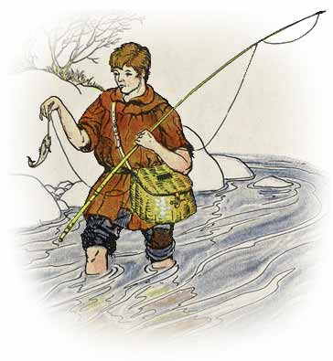jan pi alasa kala li kama jo e mani lili tan alasa ona. tenpo suno ike wan la ona li kama jo taso e kala lili. ona li pana e kala lon poki la kala li toki:
“jan alasa o awen e mi! mi lili mute li mani lili. mi kama suli la mi moku pona.”
taso jan alasa li pana e ona lon poki.
“mi weka e sina la mi ike.” ona li toki. “lili sina li suli ala. mi jo ala e kala ante. ni la sina pona.”
toki suli li mani ala. jo lili li mani.
soweli ike en soweli lili
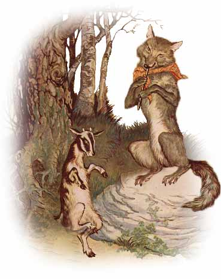palisa lawa pi soweli lili li kama suli. ni la ona li pilin e ni: ona li soweli suli li wile ala e mama. tenpo pimeja wan la kulupu ona li kama weka tan ma supa. mama ona li kalama tawa ona. taso ona li kute ala. ona li awen moku lili e kasi. kulupu ona li weka.
ona taso li lon. suno li kama anpa. pimeja suli li tawa lili lon anpa. kon lete lili li kama lon poka ona li kalama ike e kasi anpa. soweli lili li pilin ike pi soweli ike. ona li tawa nasa lon ma supa li kalama tawa mama ona. taso soweli ike li lon poka lon kulupu pi kasi suli!
sona pi soweli lili la ona li ken kama moli.
“soweli o.” ona li toki. sijelo ona li tawa lili tan pilin ike. “sona mi la sina kama moku e mi. taso o pana e kalama musi tawa mi. mi wile tawa musi li wile pilin pona lon tenpo lili.”
kalama pi open moku li pona tawa soweli. ni la ona li kalama musi pona. soweli lili li tawa musi pi pilin pona.
tenpo sama la kulupu soweli li tawa ma ona. kon pi kalama ala la kalama musi pi soweli ike li tawa suli. soweli tomo awen li kute. ona li sona e kalama pi soweli ike. wawa la ona li tawa ma supa. kalama pi soweli ike li pini. ona li tawa weka la soweli ike li pilin ike tawa pali ona. ona o moku taso e ona.
o ken ala e ni: ijo li pini e pali sina.